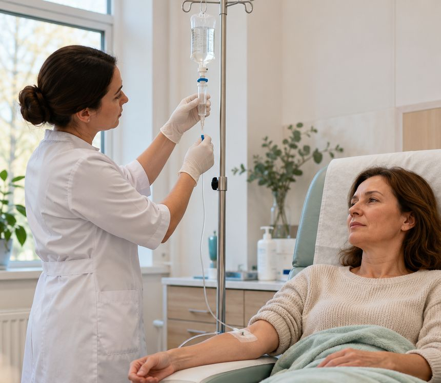
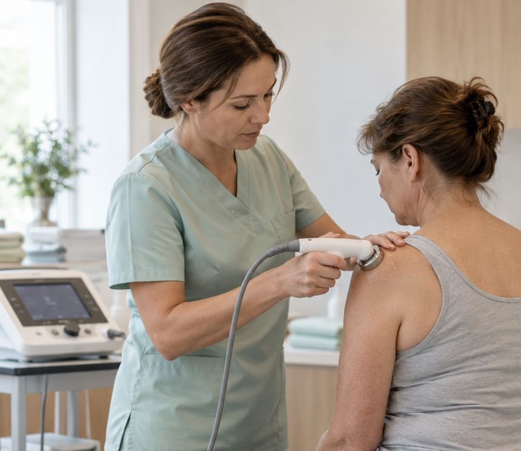

Капельницы
Внутривенное капельное введение препаратов по назначению врача. Во время процедуры вы находитесь в дневном стационаре под наблюдением медицинской сестры.
Капельное введение — 600 ₽ без препарата
Процедурный кабинет и дневной стационар в центре Красноярска: капельницы и инъекции, забор крови и мазков, перевязки, снятие швов, а также физиотерапия — электрофорез и ультрафонофорез. Аккуратно, в чистом кабинете, без очередей.

Капельницы и инъекции в процедурном кабинете выполняют по назначению врача. Медицинская сестра не подбирает препараты и не делает «витаминные капельницы по желанию»: состав, дозировку и кратность определяет врач, который знает ваше состояние.
Поэтому на процедуру можно прийти одним из трёх способов.
Возьмите письменное назначение врача (выписку, рецепт или лист назначений) с названием препарата, дозой и способом введения. Без него процедуру не проведут.
Если назначения нет, запишитесь к терапевту или профильному специалисту: врач осмотрит, при показаниях назначит лечение, и процедуру можно будет начать в процедурном кабинете.
Если вы уже наблюдаетесь у гинеколога, невролога или травматолога центра, процедуры из плана лечения выполняются здесь же — без поиска другой клиники.
Стоимость процедур указана без препаратов, если не оговорено иное. Можно ли прийти со своим препаратом, уточните у администратора при записи.
Внутривенное капельное введение препаратов по назначению врача. Во время процедуры вы находитесь в дневном стационаре под наблюдением медицинской сестры.
Внутривенные струйные, внутримышечные, подкожные и внутрикожные инъекции — по назначению врача, с одноразовыми расходными материалами.
Взятие крови из вены для анализов, назначенных врачами центра или другой клиники, а также для генетических тестов и НИПТ.
Мазки из носо- и ротоглотки, цервикальный мазок, определение pH отделяемого влагалища, получение стерильного препарата мочи.
Обработка ран и наложение повязок, снятие послеоперационных швов — в том числе после операций в других клиниках, если врач не назначил иное.
Электрофорез и ультрафонофорез лекарственных препаратов — как часть лечения, назначенного неврологом, травматологом или гинекологом.
Подробнее
Электрофорез и ультрафонофорез — от 500 ₽Оба метода помогают доставить лекарственный препарат через кожу в нужную область — без инъекции. Физиотерапию обычно назначают курсом как дополнение к основному лечению: при болях в спине и суставах, после травм, при ряде гинекологических состояний. Нужна ли она вам, какой препарат и сколько процедур — решает лечащий врач.
Препарат вводится через кожу под действием слабого постоянного тока. Во время процедуры обычно ощущается лёгкое покалывание или тепло под электродами.
Препарат в виде геля или мази наносится на кожу, а ультразвук помогает ему проникнуть в ткани. Процедура, как правило, не вызывает неприятных ощущений.
Стоимость: 500 ₽ без препаратов, 700 ₽ — включая препараты. Длительность и число процедур в курсе определяет врач.
Противопоказания зависят от конкретной процедуры и препарата. Перед капельницей и физиотерапией медицинская сестра уточнит самочувствие, а при сомнениях процедуру согласуют с врачом.
Большинство процедур занимает несколько минут. Длительность капельницы зависит от препарата и объёма — медсестра скажет заранее.
Позвоните или оставьте заявку. Администратор уточнит, какая процедура нужна и есть ли назначение врача.
Медсестра сверяет препарат, дозу и способ введения с назначением, уточняет аллергии и самочувствие.
Используются одноразовые расходные материалы. Во время капельницы — наблюдение медсестры.
Короткий отдых при необходимости. Если процедура курсовая — сразу договоритесь о следующих визитах.
Общие правила. Если врач или лаборатория дали другие указания — следуйте им.
Подробные правила подготовки к исследованиям — в разделе «Пациентам».

Процедуры выполняет процедурная медицинская сестра — по назначению врача и с проверкой каждого назначения перед процедурой.
Назначения делают врачи центра: терапевт, гинекологи, неврологи, травматолог-ортопед. Все врачи →
Цены совпадают с прайсом, утверждённым в клинике. Стоимость препаратов указана отдельно, если не оговорено иное.
Не нашли ответ? Позвоните: +7 (913) 558-87-11
Нет. Капельницы и инъекции выполняются только по назначению врача. Если назначения нет, запишитесь на приём к терапевту или профильному специалисту — врач оценит состояние и решит, нужно ли лечение.
Да. Возьмите письменное назначение с названием препарата, дозой, способом и кратностью введения. Медсестра сверит назначение перед процедурой.
В большинстве позиций — нет: в прайсе указано «без стоимости препаратов». Можно ли прийти со своим препаратом, уточните у администратора. Для электрофореза и ультрафонофореза есть вариант «включая препараты» — 700 ₽.
Забор крови и мазков выполняется в процедурном кабинете. Какие исследования можно оформить в центре и в какие сроки будут результаты, уточните у администратора: готовность лабораторных анализов — от 1 рабочего дня до 1 месяца в зависимости от исследования.
Да, снятие послеоперационных швов стоит 300 ₽. Возьмите выписку с рекомендациями хирурга. Если рана выглядит воспалённой, процедуру могут согласовать с врачом.
Например: УЗИ, SVF, гинеколог, ЭКГ, массаж